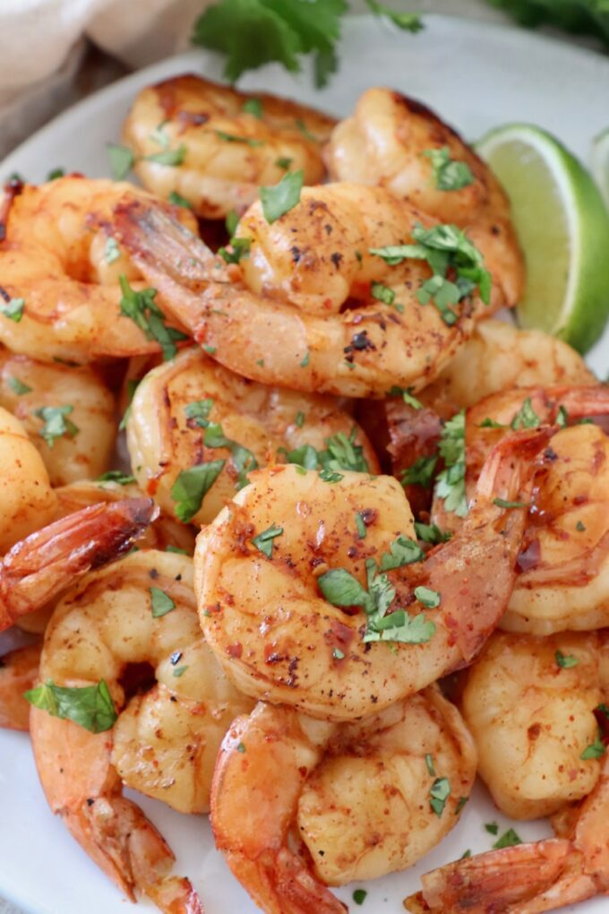

Grilled Shrimp

Description
Follow these easy grilling tips for THE BEST, easy grilled shrimp recipe that’s about to become your new favorite healthy summertime dinner.
Ingredients
- 1 cup olive oil
- ¼ cup chopped fresh parsley
- 1 lemon, juiced
- 2 tablespoons hot pepper sauce
- 3 cloves garlic, minced
- 1 tablespoon tomato paste
- 2 teaspoons dried oregano
- 1 teaspoon salt
- 1 teaspoon ground black pepper
- 2 pounds large shrimp, peeled and deveined with tails attached
- 6 skewers
Steps
- Whisk olive oil, parsley, lemon juice, hot pepper sauce, garlic, tomato paste, oregano, salt, and black pepper together in a mixing bowl. Reserve a small amount for basting later. Pour remaining marinade into a large resealable plastic bag; add shrimp, coat with the marinade, squeeze out excess air, and seal the bag. Marinate in the refrigerator for 2 hours.
- Preheat a grill to medium-low heat. Thread shrimp onto skewers, piercing once near the tail and once near the head. Discard marinade.
- Lightly oil the grill grate. Cook shrimp until opaque, about 5 minutes per side, basting frequently with reserved marinade.